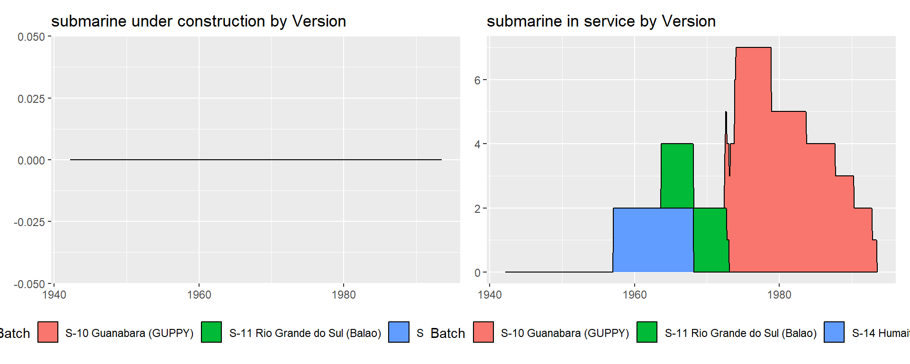
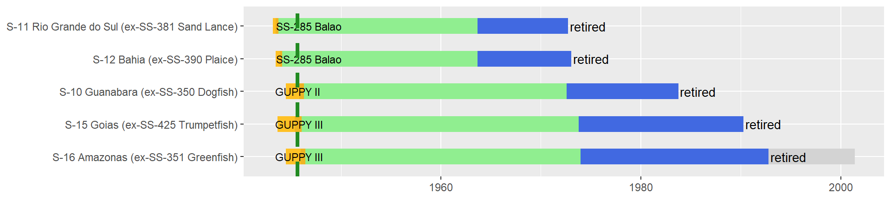
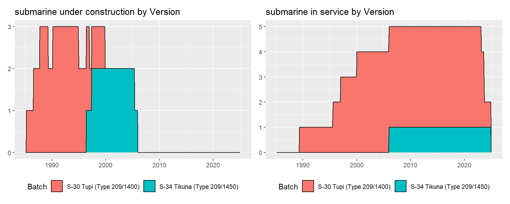

Brazil
2025-02-14
Brazil, and Suth-American country, is one of the largest in the world both in terms of population and size. It has a population of 212 million and has a long coast-line along the Southern Atlantic. It gained it’s independance from Portugal in 1822 when it’s navy was also founded. Within the timeframe of submarine operations, the Brazilian navy followed a similar development course to it’s arch rival in Argentina. The early 1910s, saw a first modernization plan come to fruition with the delivery of 2 dreadnought battleships, 2 light cruisers, and 10 destroyers from the UK, as well as 3 submarines from Italy, although a 3rd battleship was sold incomplete to the Ottoman Empire as the financial situation turned bad. The 1920s and 1930s, saw a second push, with the delivery of 4 Italian submarines, and the order of 6 British destroyers which were taken over by the Royal Navy at the outbreak of WW2. As a result, Brazil launched into a domestic production program with help from the US, leading to the production of 9 destroyers in the 1940s. Beyond these destroyers, joining the Allies in WW2 brought more developments with the delivery of 8 US destroyer escorts and local production of 6 corvettes. As with Argentina, the 1950s through 1970s relied on second-hand British and US WW2 surplus material (1 aircraft carrier, 2 cruisers, 14 destroyers, 11 submarines). Finally, from the 1970s onwards Brazil has acquired mostly newly built equipment with British, German, and locally designed ships, although second-hand ships still compose parts of the fleet (notably for aircraft carriers and large amphibious ships). Today the surface navy is composed of 3 large amphibious ships (1 LPH, 1 LPD, 1 LST), 8 older frigates and corvettes to be replaced by 8 new MEKO A-100 frigates, and 10 larger gun armed patrol ships.
Since the early 1910s, Brazil has continuously operated submarines. Three small submarines were acquired new from Italy in 1913, and replaced by four larger Italian submarines in the 1920s and 1930s. These soldiered on through WW2, and were replaced by 11 second-hand fleet submarines from the US in the 1950s to 1970s in three batches (2 in 1957, 2 in 1963, 7 in 1972-73). In the late 1970s, Brazil received 3 newly built Oberon class submarines from the UK, these then being replaced by 5 German Type 209 in the 1980s to 2000s. The first type 209 was built in Germany, however, subsequent boats were built in Brazil, marking the on end of Brazil’s reliance on foreign built submarines. Since the early 2020s, 5 French designed Scorpene class submarines are replacing the Type 209. As of today, 2 Type 209 and 2 Scorpene are in service. Notably, the 5th Scorpene submarine will be nuclear powered. In all, Brazil has operated 28 submarines, of which 4 are in service today. Three more are currently under construction.
Submarines operated by Brazil
Individual submarines by class
Specification summaries
Fiat-Laurenti type: Foca class
Three coastal submarines acquired new from Italy.
| Version | Boats | Number | Displacement | Propulsion | Power | Fuel | Speed | Range | Depth | |
|---|---|---|---|---|---|---|---|---|---|---|
| 38 | Group 3 Medusa | all | 3 | 250/305t | diesel-electric | 700/500hp | 12t | 13.5/8kts | 1600/100nm | 40m |
| Version | Boats | Year | Torpedo_text | |
|---|---|---|---|---|
| 47 | Group 3 Medusa | all | 1913 | 2x450mm (4 torp) |

Humaita class
A single large ocean going submarine, similar to the Italian Balilla class.
| Version | Boats | Number | Displacement | Propulsion | Power | Fuel | Speed | Range | Depth | |
|---|---|---|---|---|---|---|---|---|---|---|
| 39 | Group 1 Balilla | all | 1 | 1450/1884t | diesel-electric | 4000/1000hp | NAt | 18.5/10kts | 12840/120nm | 100m |
| Version | Boats | Year | Torpedo_text | Gun_text | |
|---|---|---|---|---|---|
| 48 | Group 1 Balilla | all | 1929 | 6x533mm (12 torp) | 1x120mm L41 + 2x13.2mm L76 |

Adua class (600t)
Three sea-going 600t submarines of the Adua group. These boats were initially laid down for the Italian navy and sold whilst under construction to Brazil.
| Version | Boats | Number | Displacement | Propulsion | Power | Fuel | Speed | Range | Depth | |
|---|---|---|---|---|---|---|---|---|---|---|
| 40 | Group 4 Adua | all | 3 | 674/853t | diesel-electric | 1400/800hp | 47t | 14/7.5kts | 2150/72nm | 80m |
| Version | Boats | Year | Torpedo_text | Gun_text | |
|---|---|---|---|---|---|
| 49 | Group 4 Adua | all | 1937 | 6x533mm (12 torp) | 1x100mm L47 + 4x13.2mm L76 |
Gato, Balao, and Tench classes
Former US fleet submarines from WW2 delievered in the 1950s to 1970s
| Version | Boats | Number | Displacement | Propulsion | Power | Fuel | Speed | Range | Depth | |
|---|---|---|---|---|---|---|---|---|---|---|
| 42 | SS-285 Balao | all | 2 | 1845/2415t | diesel-electric | 5400/2740hp | 472t | 20.25/8.75kts | 11000/96nm | 120m |
| 43 | GUPPY II | Balao GUPPY II | 1 | 1870/2440t | diesel-electric | 4610/5400hp | 472t | 18/16kts | 11000/96nm | 120m |
| 45 | GUPPY III | Balao GUPPY III | 2 | 1975/2450t | diesel-electric | 4610/5400hp | 472t | 17.2/14.5kts | 11000/96nm | 120m |
| Version | Boats | Year | Torpedo_text | |
|---|---|---|---|---|
| 51 | SS-285 Balao | all | 1963 | 10x533mm (24 torp or 40 mines) |
| 52 | GUPPY II | Balao GUPPY II | 1972 | 10x533mm (24 torp or 40 mines) |
| 54 | GUPPY III | Balao GUPPY III | 1973 | 10x533mm (24 torp or 40 mines) |



Gato submarines
Balao submarines

Tench submarines
Oberon class
Three new built Oberon class submarines from the UK. The last one in service was lost in a mooring accident whilst in reserve.
| Version | Boats | Number | Displacement | Propulsion | Power | Fuel | Speed | Range | Depth | |
|---|---|---|---|---|---|---|---|---|---|---|
| 46 | S-009 Oberon | all | 3 | 2040/2410t | diesel-electric | 3480/6000hp | 258t | 12/17kts | 11000/NAnm | 230m |
| Version | Boats | Year | Torpedo_text | |
|---|---|---|---|---|
| 55 | S-009 Oberon | all | 1973 | 8x533mm (22 torp) |
Type 209
Submarines of the Type 209/1400. The first was built in Germany, but the remainder were built in Brazil. A sixth boat was cancelled in 2004.
| Version | Boats | Number | Displacement | Propulsion | Power | Fuel | Speed | Range | Depth | |
|---|---|---|---|---|---|---|---|---|---|---|
| 47 | Type 209/1400 | all | 4 | 1450/1590t | diesel-electric | 2400/5000hp | 116t | 11/21.5kts | 11000/400nm | 250m |
| 48 | Type 209/1450 | all | 1 | 1550/1690t | diesel-electric | 2400/5000hp | 116t | 11/25kts | 8200/400nm | 300m |
| Version | Boats | Year | Torpedo_text | |
|---|---|---|---|---|
| 56 | Type 209/1400 | all | 1989 | 8x533mm (16 torp) |
| 57 | Type 209/1450 | all | 2005 | 8x533mm (16 torp) |

Scorpene class
French designed Scorpene submarines, but built in Brazil. They will also introduce submarine carrierd missiles to Brazil. The fifth boat is nuclear.
| Version | Boats | Number | Displacement | Propulsion | Power | Fuel | Speed | Range | Depth | |
|---|---|---|---|---|---|---|---|---|---|---|
| 49 | Scorpene S-BR | all | 4 | 1850/2010t | diesel-electric | 3260/3800hp | NAt | 12/20kts | 6500/550nm | 350m |
| 50 | Scorpene SN-BR | all | 1 | NA/6000t | nuclear | 64000/64000hp | NAt | NA/25kts | NA/NAnm | 350m |
| Version | Boats | Year | Torpedo_text | Missiles | |
|---|---|---|---|---|---|
| 58 | Scorpene S-BR | all | 2022 | 6x533mm (26 torp) | SM-39 Exocet |
| 59 | Scorpene SN-BR | all | 2032 | 6x533mm (26 torp) | SM-39 Exocet |
Full summary